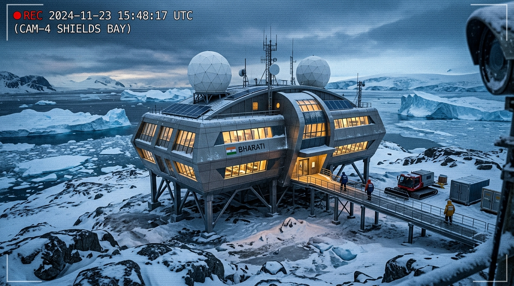
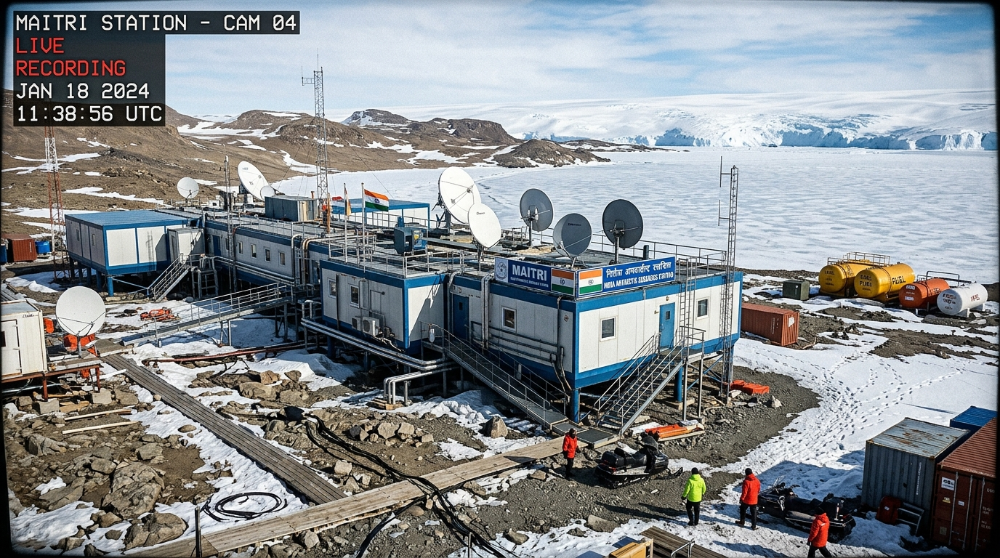
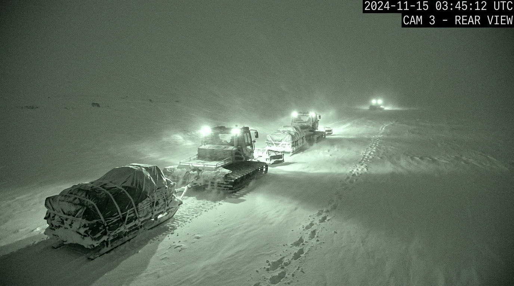

Nominal Operating
Advisory / High Demand
Critical / Anomaly Alert
🎛
TACTICAL INPUT & OVERRIDE STUDIO // LIVE DIGITAL TWIN INTERACTION
INTERACTIVE PARAMETER INJECTION & REAL-TIME CLOSED LOOP
OPERATOR INTERACTION MODE: Enter your own input values, adjust sliders, dispatch overland logistics, switch generators, or inject crisis scenarios below. Every adjustment directly updates telemetry, autonomy calculations, alerts, and map positions in real time!
❄ 1. POLAR WEATHER & ENVIRONMENT
BHARATI
AMBIENT EXTERIOR TEMP (°C)
-36.8°C
KATABATIC WIND VELOCITY (KTS)
46 kts
WIND CHILL CALCULATED
-54.2°C
WEATHER PRESETS:
⚡ 2. MICROGRID POWER DISPATCH
BALANCED
DG-1 LOAD (PRIMARY DIESEL)
68 kW
DG-2 STANDBY AUTO-START
0 kW
SOLAR PV HARVESTING (kW)
14.5 kW
WIND TURBINE HARVESTING (kW)
8.2 kW
HABITAT BASE ELECTRICAL DEMAND (kW)
82.5 kW
📦 3. FUEL, WATER & RATIONS INVENTORY
111 DAYS
JET A-1 POLAR FUEL RESERVE (LITERS)
48,500 L
QUICK INVENTORY TRANSACTIONS:
🚨 4. CRISIS SCENARIO & STRESS TEST
ANOMALY INJECTOR
Inject real-time failure modes into the station to test digital twin detection, autonomous voice alert klaxons, and AI rerouting:
📡
ANTARCTIC CONTINENTAL RADAR // VEHICLE GPS TRACKING & CARGO MOVEMENT
TRAVERSE CORRIDOR: DAKSHIN GANGOTRI ⇄ MAITRI ⇄ BHARATI
🎯 TAP CARGO TO TRACK MOVEMENT:
⚡ Quick Queries:
"where is the food cans moving"
"track medicine"
"where is polar fuel"
"track ice cores"
🥫
Convoy Foxtrot (Pantry Resupply)
ACTIVE TRAVERSE (MOVING)
GPS: 69°24'S, 76°11'E // MOVING
📦 CARGO MANIFEST
1,800 Cans of Preserved Meat, Lentils & Emergency Food Rations
📍 REMAINING DISTANCE
18.6 km left / 48 km total
⏱ ESTIMATED TIME (ETA)
53 mins
⚡ SPEED & VEHICLE
21.0 km/h // Kässbohrer Polar 400
LOGISTICS TRACKING // Convoy Alpha (PB-300)
TYPE: Tracked PistenBully PB-300 + 4x Fuel Sleds
ORIGIN: Coastal Depot (DG) ➔ DEST: Maitri Station
CARGO: 12,000 L Arctic Jet A-1 Fuel
SPEED: 18.5 km/h | ETA: 3h 12m (54.8 km left)
RISK: MODERATE (Katabatic Blizzard Sector 2)
ACTIVE OVERLAND EXPEDITION CONVOYS
🚜 DISPATCH NEW POLAR CONVOY & REAL-TIME TRAVERSE CONTROL
GPS WAYPOINT ROUTING & CUSTOM DISTANCE
65 km
TRAVERSE SPEED:
22 km/h
📹
TACTICAL CCTV SURVEILLANCE & INFRARED MONITORING
OPTICAL / FLIR THERMAL / NIGHT-VISION PHOSPHOR MODES



⚡
ENERGY DIGITAL TWIN // ARCTIC DIESEL MICROGRID & RENEWABLES
SMART LOAD BALANCING // BESS 48V DC BUS
⚙ DIESEL GENERATOR CLUSTER
3-WAY N+2 REDUNDANCY
DG-1 (Primary Base Load):
68.0 kW (18.2 L/h) - 94% Health
DG-2 (Standby Auto-Start):
ARMED 0 kW - 98% Health
DG-3 (Cold Reserve):
OFFLINE - 72% Health
💡
AI: Heat recovery exchanger recaptures 44 kW thermal energy for habitat hydronic heating.
🛢 JET A-1 POLAR FUEL RUN-RATE
AI DEPLETION MODEL
Daily Consumption: 436 L/day
Reserve: 48,500 L
⚠
AI Prediction: At current thermal heating load (-36.8°C), minimum threshold (20%) will be reached in 82 days. Resupply buffer adequate.
☀️ HYBRID RENEWABLE GENERATION
ACTIVE HARVESTING
Solar PV Array: 14.5 kW
Wind Turbine: 8.2 kW
⚡
Total renewable offset: 22.7 kW (27.5% of total station load saved from diesel combustion).
🔋 BATTERY ENERGY STORAGE (BESS)
92% SoC
Bus Voltage: 49.2 V DC
Autonomy at Zero Gen: 6.4 Hours
✓
Battery thermal jacket active (+14°C) to prevent sub-zero capacity loss.
📦
ESSENTIAL STATION INVENTORY & AUTONOMY CALCULATOR
AUTOMATED RUN-RATE ESTIMATOR & CRITICAL WARNINGS
🍞 FOOD RATIONS & PROVISIONS
12.5 DAYS LEFT
Current Stock: 428 kg
Burn: 34 kg/day (Crew 23)
⚠
CRITICAL ADVISORY: Food stock is below 15-day reserve. Convoy Bravo scheduled to deliver 2,400 kg rations within 42 minutes.
💧 POTABLE WATER & SNOWMELT
19.3 DAYS BUFFER
Current Stock: 16,400 L
Consumption: 850 L/day
✓
Priyadarshini water pipeline trace-heater nominal (+4.8°C). Snowmelt backup ready.
🫁 MEDICAL OXYGEN CYLINDERS
84 DAYS
Available: 18 Cylinders (150 bar)
Medical ICU status: Ready
✓
Pressure manifold stable. Dedicated emergency hyperbaric reserve verified.
🔧 CRITICAL SPARES & FILTERS
NOMINAL
• Generator Diesel Fuel Filters: 14 Sets
• PistenBully Track Links: 24 Spares
• Trace-Heating Wire Elements: 120 meters
✓
Critical maintenance spares inventory meets wintering-over contingency requirements.
🤖
AI PREDICTIVE MONITORING & RISK DECISION PIPELINE
AUTONOMOUS CORRELATION: METRICS ➔ PREDICTION ➔ RISK ➔ ACTION
CURRENT CONDITION: Maitri Fuel 18.6%
➔
PREDICTED: Critical reserve reached in 72h
➔
RISK: HIGH (Habitat Heating Hazard)
➔
RECOMMENDED: Emergency Convoy Resupply
AI Model predicts rapid depletion acceleration as blizzard wind chill (-61°C) will force habitat heating demand from 74 kW to 92 kW. Resupply protocol triggered.
CURRENT CONDITION: Line Temp -2.1°C
➔
PREDICTED: Ice crystal accumulation within 4.5h
➔
RISK: MODERATE (Water Blockage)
➔
RECOMMENDED: Engage Trace Cable 2
Thermal dissipation rate along the 450m unshielded lake intake exceeds primary trace cable wattage. Auxiliary heating circuit activation recommended.
CURRENT CONDITION: Katabatic Gusts 62 kts
➔
PREDICTED: +4.2h Traverse Delay for Convoy Alpha
➔
RISK: LOW-MODERATE
➔
RECOMMENDED: Shift to Ridge Waypoint
Satellite radar indicates sastrugi drift height increasing by 0.6m in moraine valley. Rerouting convoy onto elevated blue ice ridge cuts traverse time by 1.8 hours.